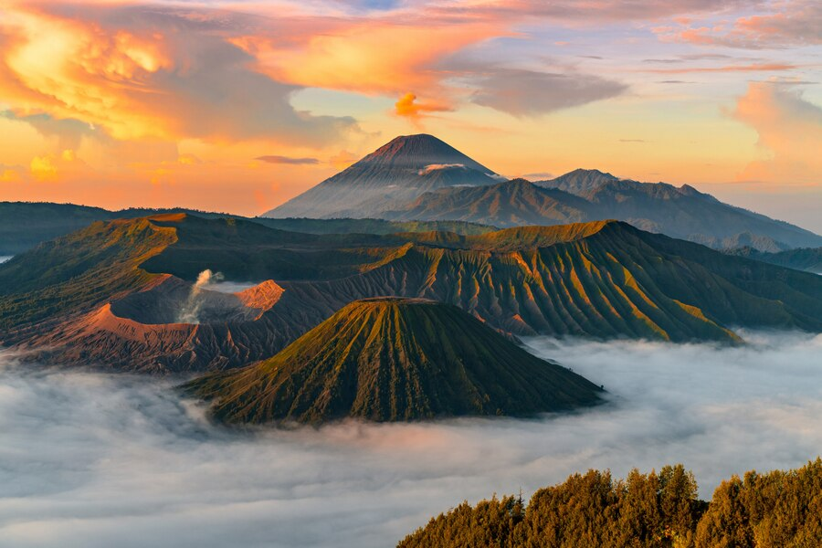

Jelajahi Gunung Bromo
Gunung Bromo, yang terletak di Jawa Timur, adalah salah satu gunung berapi paling terkenal di Indonesia. Bromo menawarkan pemandangan matahari terbit yang menakjubkan, kawah yang aktif, dan hamparan pasir laut yang luas.
Tempat Wisata Populer

Puncak Bromo
Puncak Gunung Bromo menawarkan pemandangan spektakuler dari kawahnya yang aktif dan panorama sekitarnya.

Penanjakan
Tempat terbaik untuk menyaksikan matahari terbit dengan latar belakang Gunung Bromo, Gunung Semeru, dan Gunung Batok.

Lautan Pasir
Hamparan pasir luas di sekitar Gunung Bromo yang memberikan kesan seperti berada di gurun pasir.
Budaya Tengger
Masyarakat Tengger yang tinggal di sekitar Gunung Bromo memiliki budaya dan tradisi yang unik. Wisatawan dapat menyaksikan upacara Kasada, di mana sesajen dilemparkan ke dalam kawah Bromo sebagai tanda penghormatan kepada dewa-dewa gunung.